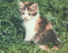

<html>

<head>

<title>The Annotated "Cosmic Charley"</title>

</head>

<body>

<i>"I just wonder if you shouldn't feel less concern about the deep unreal"</i>



<h2>The <i>Annotated</i> "Cosmic Charley"</h2>

An installment in <a href="gdhome.html"> The <i>Annotated</i> Grateful Dead Lyrics.</a><br>

By <a href="david.html">David Dodd</a><br>

Research Associate, Music Dept., University of California Santa Cruz

<hr>

<a href="copyrigh.html">Copyright notice</a>

<hr>

<a href="#title"><b>"Cosmic Charley"</b></a>

Words by Robert Hunter; music by Jerry Garcia<br>

Copyright Ice Nine Publishing; used by permission.

<p>

<a href="#cosmic">Cosmic Charley</a> how do you do?<br>

<a href="truckin.html">Truckin'</a> in style along the avenue<br>

Dumdeedumdee doodley doo<br>

Go on home, your mama's calling you<br>

<p>

<a href="#calico">Calico</a> <a href="#kahlia">Kahlia</a> come tell me the news<br>

Calamity's waiting for a way to get to her<br>

<a href="rose.html">Rosy</a> red and electric blue<br>

I bought you a paddle for your paper canoe<br>

<p>

Say you'll come back when you can<br>

Whenever your airplane happens to land<br>

Maybe I'll be back here too<br>

It all depends on what's with you<br>

<p>

Hung up waitin for a windy day<br>

Kite on ice since the first of February<br>

Mama Bee saying that the wind might blow<br>

But standin here I say I just don't know<br>

<p>

New ones comin as the old ones go<br>

Everything's movin here but much too slowly<br>

Little bit quicker and we might have time<br>

to say 'how do you do?" before we're left behind<br>

<p>

<a href="#calliop">Calliope</a> wail like a <a href="#zoo">seaside zoo</a><br>

The very last lately inquired about you<br>

It's really very one or two<br>

The first you wanted, the last I knew<br>

<p>

I just wonder if you shouldn't feel<br>

less concern about the deep unreal<br>

The very first word is : How do you do?<br>

The last: go home, your mama's callin you<br>

<p>

Go on home<br>

Your mama's calling you<br>

Calling you.....<br>

<hr>

<a name="title"><h3>"Cosmic Charley"</h3></a>

AKA "Cosmic Charlie."<br>

Recorded on <a href="discog1.html#aoxomoxoa"><cite>AOXOMOXOA</cite></a>

	<ul>

	<li>This version included on <cite><a href="discog2.html#trip">What a Long, Strange Trip It's Been</a></cite>

	</ul>

<p> 

First verified performance at the Matrix in San Francisco on October 19, 1968, appearing out of 

<a href="darkstar.html">"Dark Star."</a> Final performance on September

25, 1976 at the Capital Centre in Landover, Md., out of <a href="scarlet.html">

"Scarlet Begonias"</a>.

<hr>

<a name="cosmic"><h3>Cosmic Charley</h3></a>

A note from Ihor Slabicky, author of <a href="http://tcgdd.freeyellow.com/tcgdd.html">The Compleat Grateful Dead Discography</a>, clearing up an earlier misunderstanding:
<blockquote>
Subject: agdl correction<br>
Date: Wed, 07 Nov 2001 12:23:36 -0500<br>
From: ihor <ihor_w_slabicky@raytheon.com><br>
<p>
<blockquote>
Cosmic Charley
<p>
This note from Ihor Slabicky's discography: 
<blockquote>
     "Cosmic Charlie" is supposedly based on Charles "Cosmic
Charlie"
Bosch, one of the characters on the scene in the Haight, who
was 'so
cosmic'. 
</blockquote>
<p>
----------
</blockquote>
hello david,
<p>
not correct at all!  hunter has clarified that 'cosmic
charlie' is NOT
about that person...
<p>
I-)  ihor
</blockquote>

<hr>

<a name="calliop"><H3>Calliope</H3></a>

(Illustration from a mural in the 

<a href="http://lcweb.loc.gov" target="new">Library of Congress</a>, painted by Edward Simmons, as reproduced on a circa 1910 postcard)<br><p>

Calliope is "the <a

href="http://info.desy.de/gna/interpedia/greek_myth/lessorgod.html#Muses" target="new">Muse</a> of epic poetry, and chief of the Muses. She

was the mother of Orpheus by Apollo or King Oeagrus." <a

href="biblio.html#benet">Benet's <cite>Reader's

Encyclopedia</cite></a>. She was also the muse of playing on

stringed

instruments. 

<p>



Of course, a calliope is also a keyboard instrument, usually

associated with the sound of circuses and carousels.

<p>

The calliope is an American invention, attributed to Joshua C. Stoddard of 

Worcester, Massachusetts, who filed a patent to produce the instruments

in 1855. They were extensively mounted on showboats. According to

<a href=biblio.html#grove"><cite><b>New Grove Dictionary of Music and

Musicians</b></cite></a>, "Most calliopes had a 

limited range (13 to 20 whistles); many had 32, the largest 588.

Reputed to have been audible as far as eight miles away, the calliope

played popular dances or marches..." (p. 628)<p>

<hr>
<h3><a name="zoo">seaside zoo</a></h3>
This note from a reader:
<blockquote>
Date: Tue, 16 Sep 1997 15:18:59 -0500<br>
From: LUDDITE@ACS.TAMU.EDU<br>
Subject: Annotated Cosmic Charlie
<br>
David Dodd,
<br>
Your Annotated Grateful Dead Lyrics Web Site is fantastic.  I'm just sending
you a couple of tidbits of info about San Francisco that may be relevant to
your annotations of the song "Cosmic Charlie."
<br>
There is a "seaside zoo" in San Francisco, the SF Zoo on Sloat Blvd at 45th
Ave.  <a href="http://www.sfzoo.com/" target="new"> http://www.sfzoo.com/</a> ; the zoo has a carousel that may have a calliope.  Friends who live near the zoo say they can hear the animals "wail" sometimes.
<br>
Also, there's an old carousel in Golden Gate Park, just north of Kezar Stadium
(map at <a href="http://www.sanfranciscoonline.com/bcg/map/GGPark_map.gif" target="new"> http://www.sanfranciscoonline.com/bcg/map/GGPark_map.gif</a>); a VERY loud calliope plays while the carousel runs.
<br>
The carousel in Golden Gate Park is big, old, and ornate, with lots of mirrors
and sparkly things.  You can ride horses, swans, tigers and other animals.
The carousel in Golden Gate Park is big, old, and ornate, with lots of mirrors
and sparkly things.  You can ride horses, swans, tigers and other animals.
<br>
Hope this is useful to your project.  Thanks for all your work!
<br>
Dave Pruett<br>
luddite@acs.tamu.edu<br>
Dept of English, Texas A&M University<br>
</blockquote>
<hr>

<a name="calico"><h3>Calico</h3></a>

From the <a href="biblio.html#jerde"><cite><b>Encyclopedia of Textiles</cite></b></a>:<br>

<blockquote>

"<b>Calico</b>: <a href="http://www.ntg-inter.com/ntg/cotton.htm#calico" target="new">Calico</a> is one of the oldest textiles known. Originally, calico came from Calcutta, 

a seaport in southwest Madras, India, from whence it derives its name. It is

known that Vasco da Gama brought calico, then called <i>pintadores,</i> to Europe

from India about 1497.<br>

<p>

Calico was executed in a plain weave of carded cotton, printed by the resist method. ... Naturalistic motifs were a favorite,

and were done with polychrome effects. The designs were usually very small."

</blockquote>

<p>

<a href="http://HTTP.CS.Berkeley.EDU/~eanders/pictures/all/cat8.jpg" target="new"></a>

The "calico" referred to by Hunter in this line, however, is much more likely

to be a reference to a type of cat. Generally, "calico," in relation to animals,

refers to a pattern of colorization similar to that of printed calico cloth.

According to the <cite>Oxford English Dictionary</cite>:

<blockquote>

"[3.b.]: Coloured in a way suggestive of printed calico; variegated, piebald.

 Chiefly of horses."

 </blockquote>

<p>

And <a href="http://www.ai.mit.edu/fanciers/other-faqs/colors.html" target="new">here's</a> the definitive word on "calico" from the Cat Fancier's Page.

<p>

According to Ihor Slabicky's <a href="biblio.html#slabicky">discography</a>"

<blockquote>

"Calico" is supposedly based on one of the Hog Farmers.

</blockquote>

<hr>

<h3><a name="kahlia">Kahlia</a></h3>

This note from a reader:

<blockquote>

Date: Thu, 01 Jan 1970 00:00:00 GMT<br>

From: Alex Allan<br>

Subject: Kahlia

<p>

I offer two thoughts for the origins of Kahlia; neither wholly convincing

but together an intriguing pair.

<p>

The first is the Cailleach (pronounced cal'yach). She is from very ancient

Scottish (pre Celtic) legend and is primarily a hag representing winter.

She also appears in other Northern European folk tales. <cite>The Penguin

Dictionary of Fairies</cite> by Katherine Briggs gives a fuller account.

<p>

The second is <a href="http://www.winternet.com/~khazana/kali.html" target="new">Kali</a>. 

She is the wife of <a href="http://www.charm.net/~nayak/shiva.html" target="new">Siva</a> (or rather one of her incarnations).

Another pretty disturbing figure, sometimes pictured bloodied and with the body 

of Siva at her feet.

<p>

The combination of the two would be an interesting creature! I cannot see

any link with Calico, but I imagine that's just Hunter alliteration (indeed

the sheet music used to have it as "Kalico Kahlia".)

<p>

Best wishes<br>

Alex<br>

</blockquote>

<p>

And another thought from a reader:

<blockquote>

Date: Mon, 17 Jun 1996 20:42:31 -0500 (EST)<br>

X-Personal_name: JUSTIN WETHERELL<br>

From: WETHERELLJ1@UOFS.EDU<br>

Subject: KHALIA

<p>

I MIGHT HAVE SOME CLUE ON THIS WORD FOR YOU, I WAS CHATTING WITH THE

STAR OF <a href="http://www.abacus.ghj.com/sci_fi/thrdrock/thrdrock.htm" target="new">"THIRD ROCK FROM THE SUN"</a> <a href="http://www.abacus.ghj.com/sci_fi/thrdrock/khali.htm" target="new">(NINA)SIMBI KHALI</a>, SHE SAID HER NAME

CAME FROM EITHER KENYA OR INDIA, WELL HER NAME MEANS "LIONESS QUEEN" AND

HOPE THAT MIGHT SHED SOME LIGHT ON KHALIA, KHALI, ALMOST SAME.

<p>

                             HOPE IT HELPS YOU, JUSTIN

</blockquote>

<p>

Thanks, Justin!

<hr>

keywords: @cats, @kites, @calliope<br>

DeadBase code: [Cosm]

<hr>

First posted: February, 1995<br>

Last revised: November 7, 2001

<pre>

















































</pre>

</body>

</html>



